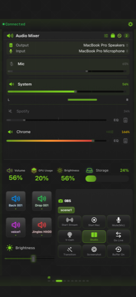
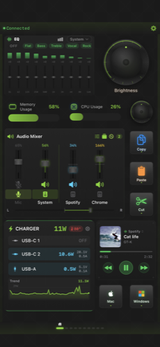
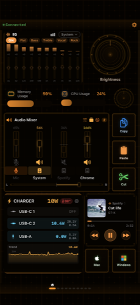
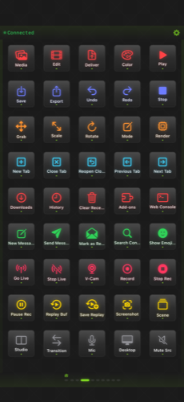

もう、物理デバイスは
いらない。
iPhone/iPadを、カスタマイズ自在なコントロールデッキに変える。30アプリ対応プリセット、セットアップ不要。




サウンドが、進化した。
v1.2ではオーディオ機能を大幅強化。Pro限定の高度な機能から、Free版でも使える新機能まで。
Magic Boost NEW PRO
動的コンプレッサー。小さい音を持ち上げ、大きい音を抑える。映画の台詞がクリアに。
10バンドEQ NEW PRO
アプリごとに31Hz〜16kHzの10バンドパラメトリックEQ。音を自在に調整。
Output Groups NEW PRO
複数デバイスに同時出力。スピーカーとヘッドフォンで同じ音楽を。
入力モニター NEW PRO
マイク入力をリアルタイムモニタリング。低レイテンシーのIOProcベース。
サンプルレート設定 NEW PRO
デバイスごとにサンプルレートを変更。44.1kHz〜192kHz対応。
Overdrive (200%) NEW PRO
音量を最大200%まで増幅。通常の2倍の音量で再生。
アプリ別出力デバイス NEW FREE
アプリごとに異なる出力デバイスを割り当て。Spotifyはヘッドフォン、ゲームはスピーカーに。
スペクトラムアナライザー NEW FREE
リアルタイム周波数分析。音の可視化で、サウンドをもっと直感的に。
プロの操作卓を、ポケットに。
ボタン、ダイヤル、タッチストリップ、ゲージ、フォルダ、音楽ウィジェット。あらゆるコンポーネントを自由に配置して、あなただけのデッキを構築。
オーディオミキサー
アプリごとの音量を0〜200%で個別制御。10バンドEQ、スペクトラムアナライザー搭載。Magic Boostで音圧を自動最適化、Output Groupsで複数デバイスに同時出力。
OBS Studio 連携
WebSocket v4/v5対応。シーン切替、配信/録画制御、ソース表示、フィルター制御など20以上のコマンド。
マクロ自動化
キー操作を記録して複雑なワークフローをワンタップ実行。遅延・ループにも対応。
18テーマ
サイバーパンク、ネオン、レトロ、ウッド、ニキシー管、アイスなど。SVGアセットのリッチテーマも。
音楽コントロール
Apple Music / Spotify / Chrome(YouTube) の再生操作と楽曲情報をリアルタイム表示。
プロファイル自動切替
Macのアクティブアプリに連動してプロファイルを自動切替。作業ごとに最適なレイアウトを即座に。
プロ級のサウンド
コントロール
アプリごとの音量を0〜200%で個別制御。10バンドグラフィックEQ（31Hz〜16kHz）とリアルタイムスペクトラムアナライザーで音を可視化。
Quick Configで音響設定をまるごと保存・復元。配信、音楽制作、ゲーム、それぞれのシーンに最適な音量バランスを瞬時に呼び出せます。

ショートカット＆
外部連携
macOSのショートカットをワンタッチ実行。HTTPリクエスト（GET/POST/PUT/DELETE）でスマートホームや外部サービスとシームレスに連携。
キーボードショートカット、テキスト入力、アプリ起動、URL、音楽制御、サウンドボードなど13種類のアクションをボタンに割り当て可能。
30アプリ、ゼロセットアップ。
アプリを選ぶだけで、厳選されたショートカットがすぐに使える。7カテゴリ、30のプロアプリに対応。
3ステップで完了。
セットアップは驚くほど簡単。同じWi-Fiに接続するだけで自動検出。
アプリをインストール
App StoreからStreamPadをiPhone/iPadにダウンロード。
Companionを導入
Mac/Windows用の無料Companionアプリをインストール。
接続＆操作開始
同じWi-Fiに接続すれば自動検出。すぐに使い始められます。
あなたに合ったプランを。
基本機能は無料。Proにアップグレードして、すべての機能を解放。
| 機能 | Free | Pro |
|---|---|---|
| 🎧 オーディオミキサー | ||
| アプリ別音量制御（0〜100%） | ✓ | ✓ |
| アプリ別ミュート | ✓ | ✓ |
| アプリ別出力デバイス指定 NEW | ✓ | ✓ |
| アプリ別バランス / パン（L/R） | ✓ | ✓ |
| リアルタイムレベルメーター | ✓ | ✓ |
| スペクトラムアナライザー NEW | ✓ | ✓ |
| システム音量 / ミュート | ✓ | ✓ |
| マイク音量 / ミュート / レベルメーター | ✓ | ✓ |
| Quick Config（設定保存） | ✓ | ✓ |
| ヘッドフォンEQプリセット | ✓ | ✓ |
| Overdrive（音量200%）NEW PRO | — | ✓ |
| 10バンドパラメトリックEQ NEW PRO | — | ✓ |
| Magic Boost（動的コンプレッサー）NEW PRO | — | ✓ |
| Output Groups（複数デバイス同時出力）NEW PRO | — | ✓ |
| 入力モニター NEW PRO | — | ✓ |
| サンプルレート設定 NEW PRO | — | ✓ |
| 🎹 MIDIコントローラー | ||
| ダイヤル → MIDI CC（主要4CC）NEW | ✓ | ✓ |
| フェーダー → MIDI CC NEW | ✓ | ✓ |
| ボタン → MIDI Note On/Off NEW | ✓ | ✓ |
| 全CC番号(0-127) NEW PRO | — | ✓ |
| 全16チャンネル NEW PRO | — | ✓ |
| ピッチベンド NEW PRO | — | ✓ |
| プログラムチェンジ NEW PRO | — | ✓ |
| ⚡ コントロール & 連携 | ||
| デバイスカスタム名 / アイコン | ✓ | ✓ |
| OBS Studio連携 | ✓ | ✓ |
| 30アプリプリセット | ✓ | ✓ |
| 18デザインテーマ（一部） | ✓ | ✓ |
| マクロ自動化 | ✓ | ✓ |
| ショートカット / Webhook連携 | ✓ | ✓ |
| 💎 Pro限定 | ||
| プロファイル自動切替 PRO | — | ✓ |
| テンプレート管理 PRO | — | ✓ |
| 全18テーマ利用可能 PRO | — | ✓ |
| 広告非表示 PRO | — | ✓ |
よくある質問
- OBS Studio 28以上をインストール
- OBS → ツール → WebSocketサーバー設定 → 「WebSocketサーバーを有効にする」をON
- ポート番号を確認（デフォルト:
4455）、必要ならパスワードを設定 - StreamPad Companion → メニューバー → 設定 → OBS Studio → URLに
ws://localhost:4455を入力 - パスワードを設定している場合は入力
- 「保存＆テスト」をクリックして接続確認
はい！基本機能は全て無料でお使いいただけます。Proにアップグレードすると、10バンドEQ、Magic Boost、Output Groups、サンプルレート設定などの高度な機能が解放されます。
はい！Windows Companion（.NET 8）を無料でダウンロードできます。Windows 10 2004以降 / Windows 11に対応しています。
Companionを起動するだけで仮想MIDIデバイス「StreamPad」が自動作成されます。ダイヤル・フェーダー・ボタンの編集画面でアクションタイプを「MIDI」に変更し、CC番号やノート番号を設定してください。GarageBand、Logic Pro、Ableton Live等のDAWで自動認識されます。
今すぐ始めよう。
iPhone/iPadにStreamPadをインストール。Mac/WindowsにCompanionアプリを入れるだけ。